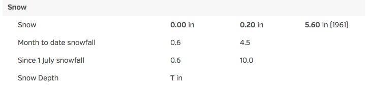

This assignment relies on data collected in Homework #1. See it for directions on getting started with matplotlib and scraping the Weather Underground website.
Built-in to Python are functions for downloading pages ('scraping data') directly from the web. We will use the urllib2 library to plot historical weather data.
Real data can be a messy. For example, on the weather data question below, you are asked to scale the size of the "bubbles" in the scatter plot to reflect the snow depth on the ground that day. As you scrape this data, you will see many values of "0", but then a "T" pops up half-way through the month. For example, here's part of the Weather Underground page for January 19, 2016:

The raw html file that produces the last 2 lines looks like:
<td class="indent"><span>Since 1 July snowfall</span></td>
<td>0.6</td>
<td>10.0</td>
<td> </td>
</tr>
<tr>
<td class="indent"><span>Snow Depth</span>
<td>
<span class="wx-data"><span class="wx-value">T</span> in</span></span>
</td>
<td>
<td>
</tr>
A good approach is to run your program, and if you discover that there's non-numeric data where you expect numbers, is to go examine the data (which we did above) to decide if it's an error in coding or an unexpected value. Let's look at the code from weather.py:
def getTempFromWeb(kind,url):
page = urllib2.urlopen(url)
lines = page.readlines()
for i in range(len(lines)):
if lines[i].find(kind+" Temperature") >= 0:
m = i
searchObj = re.search('\d+', lines[m+2])
return int(searchObj.group(0))
What does this code do? (Again, we will discuss it on 2/11, but here's notes for those working ahead or who missed it in class). It opens up the url and reads through the lines until it finds kind+" Temperature" and then searches the 2 lines later for number ('\d+' is a way of writing you would like a number of 1 or more digits as a regular expression). The re.search will return the search objects if found. What does it do if there is no number on that line? It will return Python's default I-don't-know-what-to-say value of None. But the code above assumes that searchObj contains values and continues processing. Instead, there should be a test here to make sure searchObj has a non-None value and process the data appropriately.
How can we do with this? Here's the pseudocode for a function that looks for the snow depth and returns the number given or 0 if trace amounts are reported:
def getSnowDepth(url):
The work to be submitted differs by whether you are enrolled in the computer science or mathematics course.
| CMP 464 Homework: | MAT 456 Homework: | |
|---|---|---|
| #1-2 |
Using the data you collected for Homework #1, #5, use matplotlib to produce a plot that shows the fluctuation of the month's temperature with respect to the month's average. That is, first compute the average temperature of the 31 daily temperatures and then scale each daily temperature to reflect its percentage of the average temperature. For an example, see lymeScaled.py which does a similar (but not identical) scaling to this problem Make sure to change the title of your plot to reflect the information plotted. #1: Submit your Python program as a .py file. #2: Submit a screen shot of the graphics window containing the plot. |
|
| #3-4 |
For the January minimum temperature data, compute and display the running average of the temperatures over the previous 5 days. That is, you display the average temperature over the previous 5 days for each day (if all exist, if not use as many as do exist).
For example, if the temperatures were 10,20,10,20,15,35,30,... :
#4: Submit a screen shot of the graphics window containing the plot. |
#3. Using the definitions of expectation and variance of a random variable:
E[X] = Σ Pr[X = i]*i and σ^2 = Var(X) = E[(X-μ)^2], show that
Var(X) = E[X^2] - (E[X])^2. Submit an image of your handwritten answer (.jpg or .pdf file) or a TeX'd file (.pdf file). #4: Show that for constants a and b and random variable X that: E(aX+b) = aE(X) + b. Submit an image of your handwritten answer (.jpg or .pdf file) or a TeX'd file (.pdf file). |
#5-6 |
Collect the snow depths for January 2016. Display the January minimum temperatures (collected in Homework #1) as a scatter plot (of day versus temperature) with the size of each `bubble' proportional to the snow depth on that day (see scatter_plot.py for a sample of varying `bubble' sizes). #5: Submit your Python program as a .py file. #6: Submit a screen shot of the graphics window containing the plot. |
#7-8 |
Plot the percentage of New York City's population that lives in each borough.
The raw historical population data for New York city from 1790 to 2010 is available
here. Your plot should not display the raw population numbers, but instead give the percentages. For example, in 1790, 31,131 people lives in Manhattan out of the 49,447 that lived in New York City overall. The displayed value for Manhattan in 1790 would be 31,131/49,447 * 100 = 63 percent.
#7: Submit your Python program as a .py file. #8: Submit a screen shot of the graphics window containing the plot. |